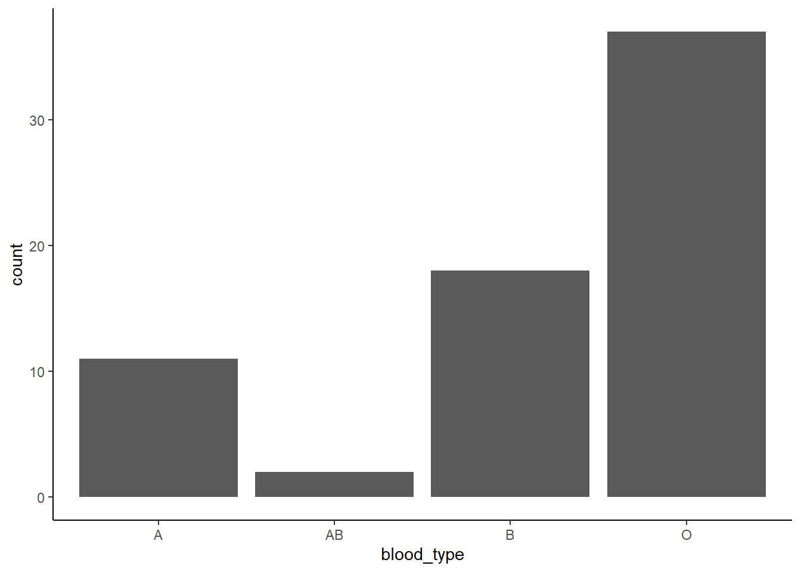
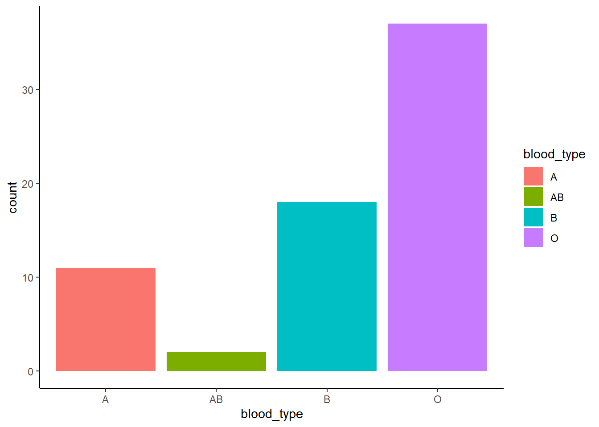
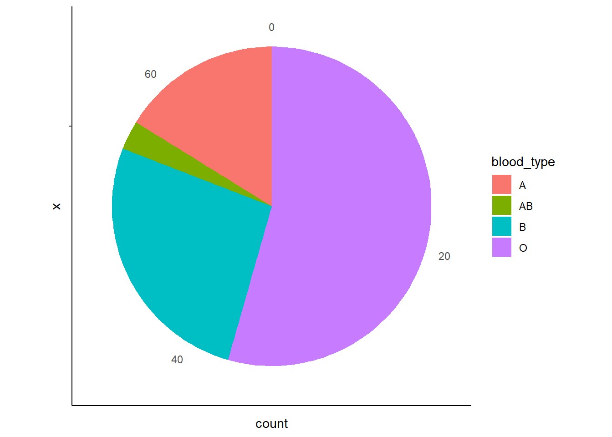

4. Visualizing a Discrete (Categorical) Variable
What kind of visualization should we use for a discrete (categorical) variable?
Let’s say we want to explore blood types in our group. How many students have blood type A? How are they compared to those with other blood types?
When working with categorical data, we often want to understand how frequently different categories occur. A simple table of counts can provide raw numbers, but visualizing the data makes it much easier to compare groups, spot trends, and identify dominant categories.
For example, in our MBTI dataset, we have several categorical variables, such as:
- Blood type (
blood_type) –A,B,AB,O - Gender (
gender) –Female,Male - MBTI personality type (
MBTI) –INTJ,ENFP,ISTP, etc.
To explore categorical data effectively, we can use different types of visualizations:
Bar Charts– The most common way to show category counts.Pie Charts– Show proportions as parts of a whole.
4.1 Bar Chart: Most Common Category/Categories
A bar chart is the most straightforward way to visualize the frequency of each category.

Filled colors based on blood types

Why are we using fill instead of color here?
Click to see the answer
Inggplot2, color and fill control different aspects of aesthetics. The color aesthetic is used for points, lines, and the outlines of shapes, applying to geoms like geom_point(), geom_line(), and geom_boxplot() (affecting the box outline). In contrast, fill is used for shapes with an interior area, such as bars, violins, and density plots (geom_bar(), geom_violin(), geom_density()), where it determines the inside color.
Why use a bar chart?
- Clearly shows which category is most/least common.
- Easy to compare absolute counts across categories.
4.2 Pie Chart: Proportion of Blood Types
If we want to see categories as proportions of the total group, a pie chart works ok if the data is not too complex.
ggplot(MBTI) +
geom_bar(aes(x = "", fill = blood_type), width = 1) +
coord_polar(theta = "y") +
theme_classic()
Why use a pie chart?
- Helps visualize proportions
- Useful when total size matters (e.g. “What percentage of students have blood type A?”).
Caution When Using Pie Charts
While pie charts can be useful for showing proportions, they are not always the best choice. Here’s why:
Pie charts can be hard to interpret when there are many categories.
If there are too many slices, it becomes difficult to compare proportions accurately. Small differences between slices are harder to judge than in a bar chart.
Bar charts are usually a better alternative in many cases.
A bar chart allows for precise comparisons by looking at bar heights, whereas our eyes are better at comparing lengths (bars) than angles (pie slices).
When should you use a pie chart?
- When there are few categories (e.g. blood type with only 4 groups: A, B, AB, O).
- When you want to highlight one dominant category (e.g. “Most students have blood type O”).
- When percentages are labeled clearly so that proportions are obvious.
If your data has many categories or small differences matter, a bar chart is usually the better choice for clarity and accuracy.
Previous: 3. Visualizing a Continuous Variable | Next: 5. Visualizing Relationships Between Two Variables